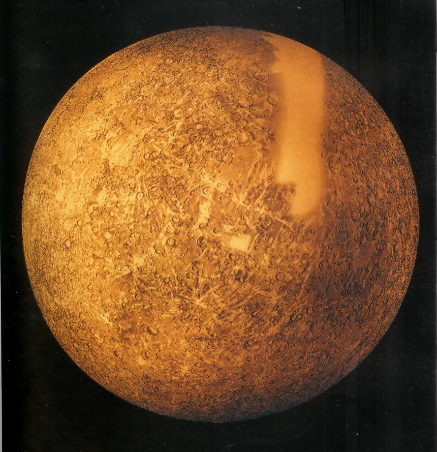

Mercury is the first planet from the Sun and the smallest planet in the Solar System. It is a terrestrial planet, meaning it has a solid, rocky surface like Venus, Earth, and Mars. Mercury has a diameter of about 4,880 kilometers, making it only slightly larger than Earth's Moon. Because it is so close to the Sun, Mercury completes an orbit in just 88 Earth days. Despite being the closest planet to the Sun, Mercury is not the hottest planet in the Solar System.
Mercury does not have a traditional atmosphere like Earth. Instead, it has an extremely thin layer of gases called an exosphere. The exosphere contains small amounts of oxygen, sodium, hydrogen, helium, and potassium. Because Mercury has almost no atmosphere to distribute and retain heat, its temperatures change dramatically. During the day, temperatures can reach around 430°C (800°F), while nighttime temperatures can fall to around -180°C (-290°F).
Mercury has a heavily cratered, rocky surface that resembles the surface of Earth's Moon. Its craters were created by collisions with asteroids and other objects over billions of years. Mercury also has large cliffs called scarps, which formed as the planet's interior cooled and contracted. One of its largest features is the Caloris Basin, an enormous impact crater approximately 1,500 kilometers wide.